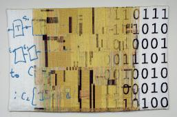

Randy Bryant's Home
- Name:
- Randal E. Bryant
- University Professor of Computer Science
- Dean, School of Computer Science
- with courtesy appointment in Electrical
and Computer Engineering .
- Publications and Presentations:
-
- We are formulating a plan for a research project that extends the type of computing systems
used for Internet search to a larger range of applications.
We originally referred to such systems as
Data-Intensive Super Computing (or ``DISC'') systems.
More recent, we have repurposed the acronym to be ``Data-Intensive Scalable Computer Systems.''
You can read a Conceptual Overview
- Dave O'Hallaron and I are
authors of the textbook titled Computer Systems: A Programmer's
Perspective, with the second edition available as of Feb. 15, 2010.
. More information can be found on the CS:APP Web Page.
Most recently, we started a
blog in which we discuss
both the contents of the book and its use as a textbook.
-
- Check out my publication list, complete
with links to electronic versions of many of the papers.
-
- I have a web page with copies of selected
presentations
-
- Check out my most cited paper: ``Graph-Based Algorithms for Boolean Function Manipulation,''
IEEE Transactions on Computers, Vol. C - 35, No. 8, August, 1986,
pp. 677 - 691. This version includes footnotes giving updates on some of
the ideas and conjectures presented in the paper. As of May, 2009, this
paper is listed by the CiteSeer database as their seventh most cited article.
See their web page of
Most Cited Computer Science Articles.
- As an illustration of what binary decision diagrams (BDDs) can be used for, take a look at Interesting Maps page I
have created based on some recent work by
Don Knuth. Pursuing graph coloring a bit further, check out my colorings of the
McGregor graph.
- I recent scanned a copy of my master's thesis, published in 1977 as technical report MIT-LCS-TR-188: Simulation of Packet
Communication Architecture Computer Systems. It is regularly cited as one of the first publications on distributed simulation.
Personal Information:
- A brief biography: Text file
- The short version of my curriculum vitae: [Postscript
| Adobe Acrobat | HTML]
- A separate list of publications: [Postscript | Adobe
Acrobat | HTML]
- The full-blown version of my curriculum vitae: [Postscript
| Adobe Acrobat | HTML] This includes publications, presentations, students, etc.
- I have a website for my family at www.RandalBryant.com.
- If you visit my office, you'll see an interesting weaving hanging
on the wall created by Lois Bryant. Lois is my sister, but she's also a well-respected textile artist.

This weaving is inspired by the design and application of microprocessors. The lefthand side shows the equations by which one reasons about a processor design. The center section mimics an
Intel Pentium chip, and the righthand side displays the bits that the processor generates.
Classes:
- Mailing Address:
- School of Computer Science
- Carnegie Mellon University
- 5000 Forbes Avenue
- Pittsburgh, Pennsylvania 15213-3891 USA
Office: - Gates Center for Computer Science 5113
- (Voice) 412-268-8821
- (FAX) 412-268-5497
- Email: CLICK HERE@cs.cmu.edu (Spam blocking provided by the reCAPTCHA Project).
-
Assistant:
- June Fischerkeller
- Gates Center for Computer Science 5111
- (Voice) 412-268-7884
- (FAX) FAX: 412-268-5497
- Email:
CLICK HERE@cs.cmu.edu
- Projects:
- UCLID project home page.
- Current Graduate Students:
- Former Graduate Students:
{kind=link}
{kind=link}
{kind=link}